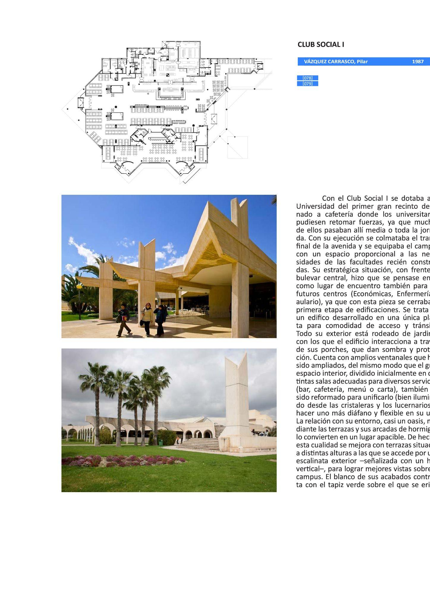
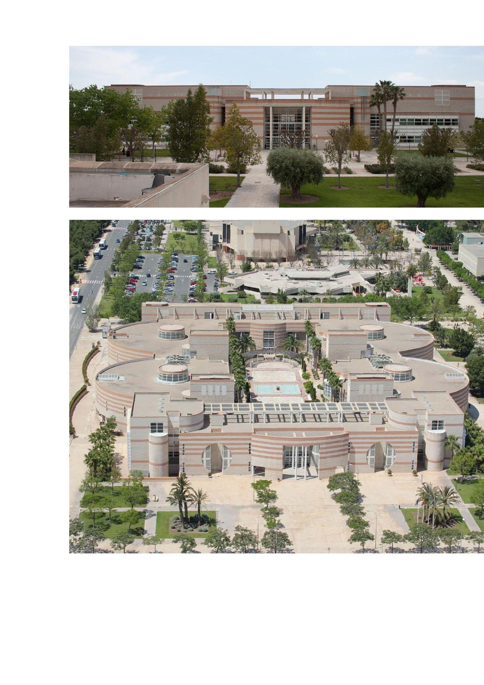
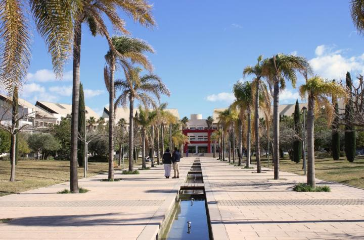
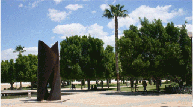
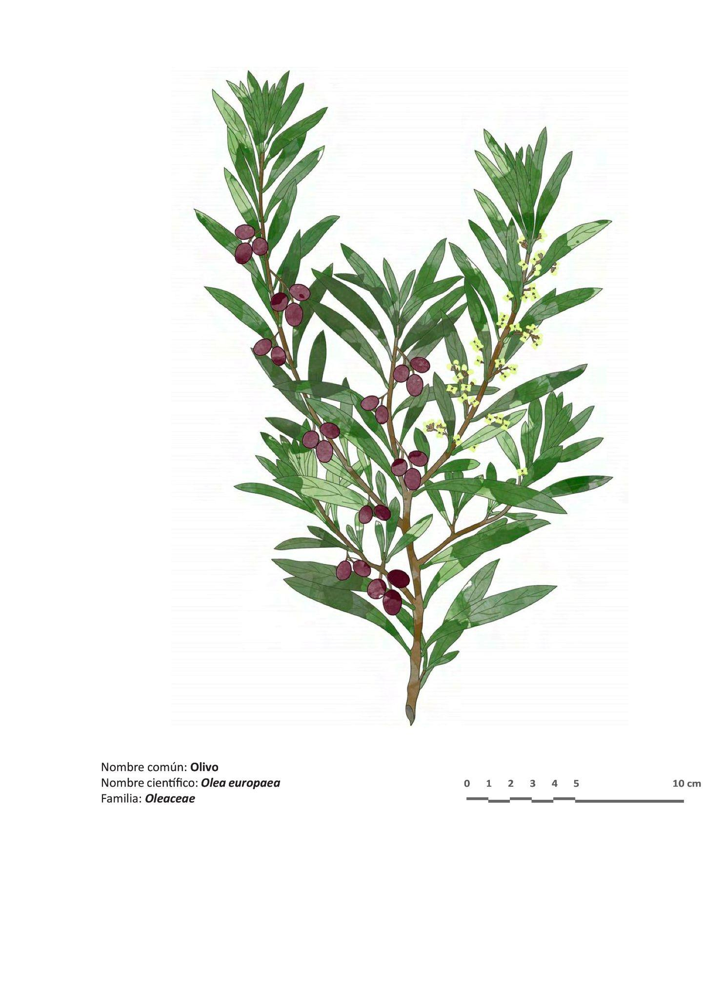
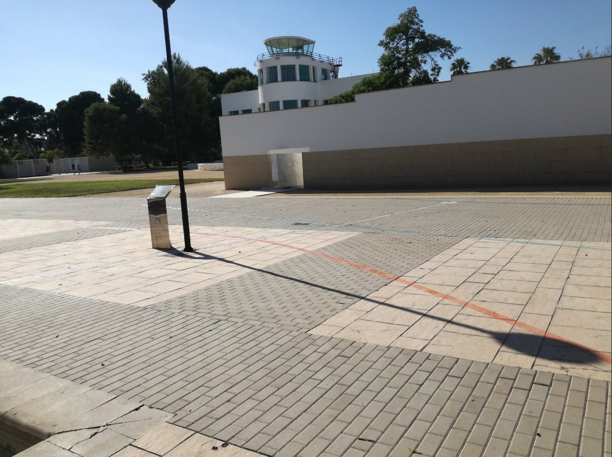
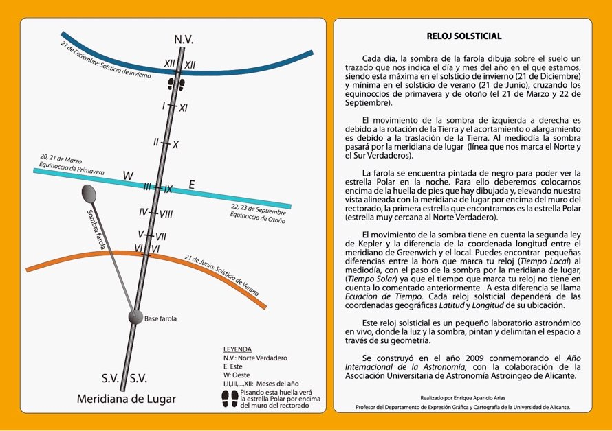

PARADA 7. RELOJ DE SOL
En nuestro recorrido desde la Bosque Ilustrado hacia Rectorado, vamos a pasar en primer lugar por una serie de edificios construidos entre 1980 y 1990, como lo fue el edificio de la Facultad de Derecho, junto a la Plaza de Europa, o el propio edificio de la Facultad de Filosofía y Letras desde el que hemos comenzado el itinerario. Recordad que la Geografía Urbana y la Geografía del paisaje son ramas de la Geografía.
En primer lugar, a nuestra izquierda tenemos el Club Social I y a nuestra derecha el Aulario General I.
El Club Social I fue el primer gran espacio dedicado exclusivamente a cafetería y restauración para la vida en el campus.

El aulario General I también supuso una innovación en la UA ya que fue el primer edificio dedicado exclusivamente a aulas sin estar asignado a ninguna facultad o estudios, según se establecía en la Ley de Reforma Universitaria.

Los otros dos edificios entre los que pasamos son: Facultad de Ciencias de la Salud, a la izquierda, y Facultad de Ciencias Económicas y Empresariales, a la derecha. Ambos también construidos en la década 1980 y 1990.
Entramos en la zona de construcción de 1990 a 2000, son los años de los Juegos Olímpicos de Barcelona, Exposición Universal de Sevilla, Guggenheim en Bilbao o La Ciudad de las Artes y las Ciencias en Valencia. La avenida de las palmeras y la Plaza de la Igualdad quedan rodeadas por la izquierda del edificio del Rectorado, enfrente el Aulario General II,y por la derecha Ciencias Sociales y la Biblioteca General.

https://web.ua.es/es/ecocampus/imagenes/biodiversidad/flora/senda-paisajistica/5-avda-palmeras.jpg

Curiosidad: A ambos lados de las palmeras, podemos ver olivos (Olea europaea var europaea) https://www.arbolesibericos.es/genre/olea/species/oleaeuropaea . La planta silvestre o acebuche, Olea europaea var sylvestris, es la que podemos encontrar en el monte junto a los carrascales, pinares o maquias, siempre en zonas cálidas y termófilas. (http://herbarivirtual.uib.es/es/comunitat-valenciana/614/especie/olea-europaea-l-)

La cartografía, es la herramienta esencial de la Geografía. Sirve para plasmar en los mapas los elementos, procesos naturales y antrópicos que acontecen en la superficie terrestre. Hoy en día, tenemos la información de los satélites, pero hace siglos se utilizaban las estrellas para orientarse y para elaborar los primeros mapas. Estos fueron los de cabotaje, es decir, aquellos que representaban sólo las costas, puertos, y fueron fundamentales para las relaciones y actividades comerciales. En el Instituto Geográfico Nacional (IGN) podéis consultar los mapas, cartas náuticas y planos de poblaciones más antiguos del territorio español. (https://www.ign.es/web/catalogo-cartoteca/)
Junto al edificio de Rectorado, vemos en el suelo una serie de líneas de colores. Es un reloj solsticial. Se construyó en 2009 con motivo del Año Internacional de la Astronomía por la Asociación Universitaria de Astronomía de Alicante, Astroingeo (profesor Enrique Aparicio Arias, profesor del dpto de Expresión Gráfica y Cartografía de la UA).
Este tipo de relojes estaban colocados en las catedrales europeas más importantes desde el siglo XV. Se denominaban “heliómetros” y utilizaban la oscuridad del templo para hacer pasar un haz de luz en su interior desde la fachada meridional. Así se determinaban los equinoccios y solsticios. Por ejemplo, la basílica San Petronio en Bolonia (Italia) fue la utilizada para fijar el calendario gregoriano.

https://web.ua.es/es/ecocampus/medio-natural-y-perceptual/reloj-solsticial-ua.html

https://personal.ua.es/enrique.aparicio/3.7.1_En_la_Universidad_de_Alicante.html
Más información en:
{kind=link}